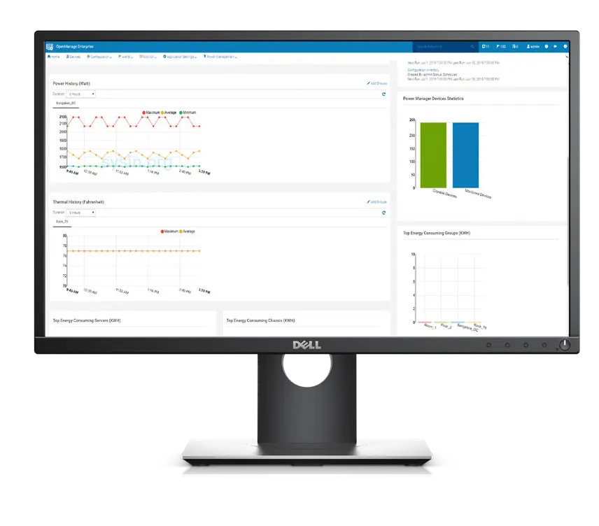
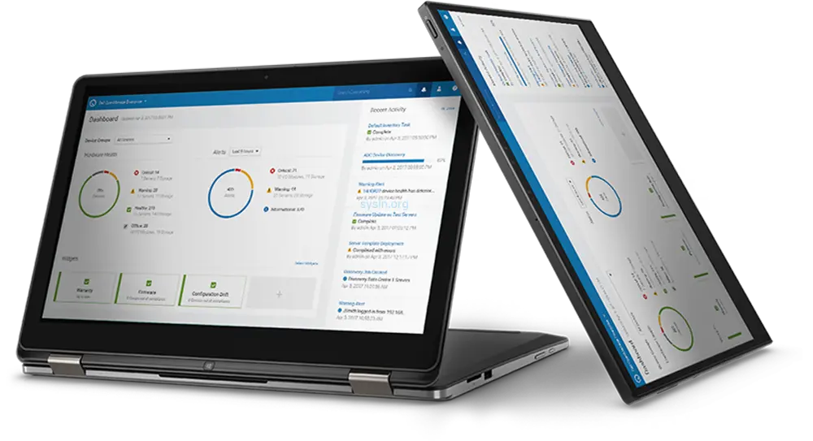

请访问原文链接：Dell OpenManage Enterprise 4.8 - Dell 服务器、存储和网络设备集中管理软件 查看最新版。原创作品，严禁商业及个人盈利性网站转载。
作者主页：sysin.org
Dell OpenManage Enterprise
Dell OpenManage Enterprise 是一款集中式系统管理控制台，用于监控、更新和管理 Dell PowerEdge 基础设施。管理员可以使用 OpenManage Enterprise 部署更新、监控硬件运行状况、自动化服务器管理，并通过单一界面统一管理多台 Dell 系统。
下载 OpenManage Enterprise，简化企业 IT 运维及基础设施生命周期管理。
OpenManage Enterprise 概览
OpenManage Enterprise 是作为虚拟设备提供的多系统管理和监视 Web 应用程序。您可以通过它全面了解企业网络中的戴尔服务器、机箱、存储、其他第三方设备和组件以及网络交换机 (sysin)。它专为新一代 IT 专业人员而设计，专注于简易性、自动化和统一数据中心管理。

借助 OpenManage Enterprise，用户可以执行以下操作：
- 查找数据中心环境中的设备。
- 查看硬件资源清册并监测设备运行状况。
- 查看和管理设备收到的警报并配置警报策略。
- 监测固件/驱动程序版本。
- 使用固件基线管理设备的固件/驱动程序更新。
- 管理设备上的远程任务（如电源控制）。
- 使用部署模板管理设备间的配置设置。
- 使用智能标识池管理设备间的虚拟标识设置。
- 使用配置基线检测和修复设备间的配置偏差。
- 检索和监测设备的保修信息。
- 将设备分组为静态或动态组 (sysin)。
- 创建和管理 OpenManage Enterprise 用户。
- 备份和还原设备。
OpenManage Enterprise 包含安全功能，例如：
- 基于角色的访问权限，用于限制对控制台设置和设备操作的访问。
- 基于范围的访问控制允许管理员限制设备管理者可以访问和管理的设备组。
- 通过 Security-Enhanced Linux (SELinux) 和内部防火墙加强的设备。
- 内部数据库中的敏感数据加密。
- 在设备之外使用加密通信 (HTTPs)。
- 创建固件和配置相关的策略。
- 配置以配置和更新裸机服务器。
OpenManage Enterprise 具有基于任务的 GUI，其设计导航时充分考虑主要由管理员和设备管理者使用的任务的顺序。将设备添加到环境中时，OpenManage Enterprise 会自动检测设备属性，将它置于相关的设备组中，并支持您管理设备。
OpenManage Enterprise 的主要优势
- 作为安全的虚拟设备进行部署
- 采用直观的控制面板和弹性搜索引擎
- 通过用户定义的策略、模板和基准，实现一对多智能自动化
- 借助全面的 RESTful API，实现可自定义的自动化和解决方案集成
- 通过基于范围的访问控制 (SBAC)，管理员可以将用户限制到特定的设备组
OpenManage Enterprise 的功能与优势

简化（Simplify）：通过直观的系统管理解决方案降低复杂性。
- 现代化 HTML5 UI 控制台，以虚拟设备形式部署，支持 VMware ESXi、Microsoft Hyper-V 和 KVM 环境。借助弹性搜索（Elastic Search）技术，OpenManage Enterprise 使用更加直观便捷。
- 与 OpenManage Mobile 无缝集成
- OpenManage Mobile 使 IT 管理员能够随时随地执行部分服务器配置、监控、故障排除和修复任务。
- 无需设置代理，即可将 OpenManage Enterprise 中的告警通知推送至 OpenManage Mobile。
统一（Unify）：面向一对多管理的控制台，专为扩展而构建。OpenManage Enterprise 是面向数据中心的一对多系统管理控制台。
扩展至 8,000 台设备：
使用单一工具，无论设备形态如何，均可管理最多 8,000 台设备，例如 PowerEdge 机架式服务器、塔式服务器、模块化服务器，以及 PowerVault MD 和 ME 存储系统 (s)，同时支持第三方基础设施。注意：OME 目前支持通过单个 OME 控制台对最多 25,000 台设备进行（仅监控用途，例如发现、资产清单、运行状况和告警）管理。其他功能（例如插件和固件更新）仍将遵循当前的规模限制。
可扩展的插件架构：
OpenManage Enterprise 通过新的插件仪表板增加插件扩展能力。用户可以通过同一界面安装、更新和禁用插件。- 面向 VMware vCenter 客户的 OpenManage Enterprise Integration for VMware vCenter（OMEVV）插件。
- 面向 Microsoft Systems Center 客户的 OpenManage Enterprise for Microsoft Systems Center（OMEMSSC）插件。这些插件取代了现有的 OpenManage Integration for Microsoft Systems Center。
- 适用于 Microsoft Endpoint Configuration Manager 和 Systems Center Virtual Machine Manager（SCVMM）的生命周期管理插件。
- 适用于 Systems Center Operations Manager（SCOM）的监控插件。
- Dell OpenManage Enterprise Services（之前称为 SupportAssist）插件，可为具有 ProSupport 和 ProSupport Plus 服务权益的设备提供主动式和预测式监控 (y)，以及管理支持。
- Dell AIOps 插件会定期从 OpenManage Enterprise 管理的选定设备收集数据，并将其转发至 Dell AIOps，以提供基于 AI 的运行状况、安全性和可持续性洞察、预测及建议。
- 之前独立提供的 Dell OpenManage Enterprise Power Manager 插件功能现已集成至 OME 本身，无需单独安装插件。该功能可测量、报告和控制服务器功耗，同时自动执行热事件响应操作，并可视化关键服务器遥测数据。
- Dell OpenManage Enterprise Update Manager 插件将 Dell Repository Manager 功能集成至 OME 中，用于自动监控、自定义目录和存储库中的更新通知及下载，并在 OpenManage Enterprise 中提供精细化的版本控制能力。
集成与连接：与行业领先的第三方系统、服务管理和自动化解决方案集成。
- Dell OpenManage Integration with ServiceNow 是 ServiceNow 平台中的原生应用程序，在 OpenManage Enterprise 基础设施管理功能与 ServiceNow 服务及运营管理功能之间提供接口。
- Dell OpenManage Ansible Modules 允许数据中心和 IT 管理员使用 Red Hat Ansible (s)，通过利用集成 Dell 远程访问控制器（iDRAC）、OpenManage Enterprise 和 OpenManage Enterprise Modular 中内置的管理自动化能力，实现 PowerEdge 服务器的自动化配置、部署、编排和更新。
- Terraform Provider for OME 使数据中心和 IT 管理员能够使用 HashiCorp Terraform，通过利用 OpenManage Enterprise（OME）实现 PowerEdge 服务器的自动化配置、部署和更新。
自动化（Automate）：覆盖从发现到退役的 IT 管理任务。
- 免手动发现与部署：当网络中发现已知服务标签（Service Tag）后，OpenManage Enterprise 可以使用预定义模板自动部署系统。用户可以从现有服务器或机箱克隆模板，也可以按照简单的菜单驱动向导创建或编辑模板。
- 全面更新：OpenManage Enterprise 简化了更新流程。对于
Dell.com上的最新更新，可使用更新功能进行管理。 - 自定义报告：OpenManage Enterprise 支持创建自定义报告。例如，当供应商发布更新时，可以快速定位特定的 NIC 网卡。可自定义报告能够提供使用该更新 NIC 网卡的服务器详细信息。
安全（Secure）：安全性是首要考虑因素。
OpenManage Enterprise 可以检测用户定义配置模板中的偏差，向用户发出告警，并根据预设策略修复错误配置。
适用的 VMware 软件下载
建议在以下版本的 VMware 软件中运行（Linux OVF 无需本站定制版可以正常运行，macOS 虚拟化如果不是 Mac 必须使用定制版才能运行，Windows OVF 需要定制版才能启用完整功能）：
- VMware vSphere：
- VMware ESXi 9 or with driver & vCenter Server 9 & VCF Operations 9
- VMware ESXi 8 or with driver & vCenter Server 8
- VMware ESXi 7 or with driver & vCenter Server 7
- macOS：VMware Fusion
- Linux：VMware Workstation for Linux
- Windows：VMware Workstation for Windows
新增功能
OpenManage Enterprise 4.8 新功能
- 用户体验
- UI 增强和无障碍改进：通过完整的键盘导航和更高的信息密度，更高效地使用界面。UI 增强解决了无障碍访问、导航和缩放方面的问题。
- 简化自动部署模板工作流：通过简化的五步“自动部署模板（Auto Deploy Template）”工作流，更快速地部署模板。移除不可配置的 iDRAC 管理 IP 步骤，以减少设置时间。
- 固件管理
- 部分固件更新的容错能力：当一个或多个固件包无法下载时，固件合规性作业仍可继续执行。可用组件会按预期完成更新，而无法获取的组件将被跳过，不会阻塞作业的其余部分。
- 安全性
- 灵活的 CyberArk 凭据检索方式：针对 CyberArk 集成提供多种凭据检索方式，可根据 CyberArk 的部署方式选择合适的方法，避免手动变通操作。
- CyberArk 支持 iDRAC 10：可将 CyberArk 凭据管理应用于基于 iDRAC 10 的 PowerEdge 服务器，从而在 iDRAC 9 和 iDRAC 10 平台之间实现一致的特权凭据自动化管理。
- 集成机架
- 支持 LiteOn 19 英寸 33kW 电源机架：通过其电源管理控制器发现、监控、管理和更新 LiteOn 19 英寸 33kW 电源机架，收集遥测数据，并将电源机架作为机架级基础设施的一部分进行管理。
- 支持 Delta 第 3 代机架内 CDU (s)：发现、盘点和监控 Delta 第 3 代机架内 CDU，并可从单一控制台与 Dell 服务器一起管理液冷基础设施。
- 机架许可证状态列：在“机架（Racks）”列表视图中使用“许可证状态（License Status）”列，可快速识别已获得许可的机架，并按许可证状态进行筛选。
- 操作系统支持
- 支持 RHEL 9.8 和 RHEL 10.2：通过现有工作流管理运行 RHEL 9.8 或 RHEL 10.2 的 PowerEdge 服务器。
- 支持 Ubuntu 26.04：通过现有工作流管理运行 Ubuntu 26.04 的 PowerEdge 服务器。
- 支持 ESXi 9.1 和 vCenter 9.1：管理运行 ESXi 9.1 和 VMware vCenter 9.1 的虚拟化基础设施。
- 支持 PowerEdge R6715、R6725、R7715 和 R7725 上的 Azure Stack HCI 24H2 (y)：发现、盘点、监控和管理这些设备；查看遥测数据、部署配置模板，并将设备纳入固件合规性报告。
- 支持 XR8610t 和 XR8620t 上的 Windows Server 2025：通过现有工作流管理运行 Windows Server 2025 的 PowerEdge XR8610t 和 XR8620t 服务器。
- 设备管理
- MCP 服务器状态显示：可直接在 GUI 中查看 MCP 服务器的当前状态，并获得实时可见性 (s)。服务器的启用或禁用操作通过 TUI 进行管理，而 GUI 提供服务器状态的只读查看功能。
- 支持配备 Dell Remote Management Controller（RMC）的工作站。
下载地址
Dell OpenManage Enterprise 3.10
- 百度网盘链接：
[EoD]
Dell OpenManage Enterprise 4.0
- 百度网盘链接：
[EoD]
Dell OpenManage Enterprise 4.1
- 百度网盘链接：
[EoD]
Dell OpenManage Enterprise 4.2
- 百度网盘链接：
[EoD]
Dell OpenManage Enterprise 4.3.2
- 百度网盘链接：
[EoD]
Dell OpenManage Enterprise 4.4 for ESXi
- 百度网盘链接：
[EoD]
Dell OpenManage Enterprise 4.5 for ESXi
- 百度网盘链接：
[EoD]
Dell OpenManage Enterprise 4.6 for ESXi
- 百度网盘链接：
[EoD]
Dell OpenManage Enterprise 4.7 for ESXi
- 百度网盘链接：
[EoD]
Dell OpenManage Enterprise 4.8 for ESXi
- Release Date: 30 Sep 2026
- 百度网盘链接：https://pan.baidu.com/s/1aBZn29VwDIt6cDNHuEox3Q?pwd=x94p
- 初始化配置

文章用于推荐和分享优秀的软件产品及其相关技术，所有软件提供免费版或试用版。内容若侵犯了您的版权，请联系作者删除。如果您喜欢这篇文章，或者觉得它对您有所帮助，亦或发现有不当之处；欢迎发表评论，也欢迎分享这个网站，或者赞赏一下，谢谢！提示：捐赠或赞赏属于自愿赠予行为，提交后即表示您对作者的支持与认可。为避免误操作，请在确认前仔细检查金额，支付完成后将无法撤销或退还。
 支付宝赞赏
支付宝赞赏  微信赞赏
微信赞赏赞赏一下
敬请注册！点击 “登录” - “用户注册”（已知不支持 21.cn/189.cn 邮箱）。 请勿使用联合登录（已关闭）。